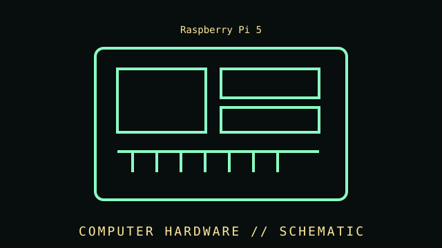

[ INDIVIDUAL COMPONENT // MOTHERBOARDS ]
Raspberry Pi 5
A Broadcom-based board computer with desktop-class I/O, a 40-pin expansion header, and a PCI Express connection for add-on storage. Compact single-board computer, Raspberry Pi 5 generation.

IDENTIFICATION WARNING: Verify the full product generation, model identifier, memory or I/O configuration, and revision against the manufacturer documentation; adjacent variants may differ significantly.
Specifications
| Catalog subcategory | Integrated and compact boards |
|---|---|
| Catalog identity | Raspberry Pi 5 |
| Era / family | Compact single-board computer, Raspberry Pi 5 generation. |
| Processor and graphics | Broadcom BCM2712 2.4 GHz quad-core 64-bit Arm Cortex-A76 CPU; VideoCore VII GPU with OpenGL ES 3.1 and Vulkan 1.3 support. |
| Memory | LPDDR4X-4267 SDRAM in board variants from 1 GB through 16 GB; memory is soldered and not user-upgradable. |
| Display and media | Two micro-HDMI display outputs supporting up to dual 4Kp60; microSD card slot supporting SDR104 mode. |
| Connectivity | Dual-band 802.11ac Wi-Fi, Bluetooth 5.0/BLE, Gigabit Ethernet, two USB 3.0 ports and two USB 2.0 ports. |
| Expansion and power | PCIe 2.0 x1 through a board connector for supported adapter/HAT; 40-pin GPIO header; USB-C 5 V/5 A recommended for full-power configurations. |
| Board fit and cooling | Compact single-board layout, not an ATX/microATX mounting standard. Enclosure, active cooler, storage adapter, and power accessories are separate model-specific parts. |
Compatibility, installation & service
- Check required host interface, supported OS/firmware, power supply, physical mounting, and accessories before installation.
- Record the complete model, SKU, board revision, firmware, accessories, and source-document revision for the specific unit.
- Do not infer capability from connector appearance alone; verify the manufacturer's manual and supported host configuration.
- Keep ventilation clear and use documented power, thermal, cabling, and ESD handling practices.
Model-specific notes
Raspberry Pi 5 is a complete single-board computer rather than a conventional socketed motherboard. Memory size is fixed at purchase, PCIe storage needs a compatible adapter, and enclosure fit differs from Raspberry Pi 4. Use the official power guidance; inadequate supply capacity can limit attached devices.
Sources & further reading
- Raspberry Pi — Raspberry Pi 5 technical specificationsManufacturer product reference for the identified model and published specifications.
- Raspberry Pi — Raspberry Pi 5 product briefManufacturer technical brief or user documentation; confirm the document revision for the unit.
Specifications describe the cited product family; SKU, region, and revision should be checked against the physical unit.